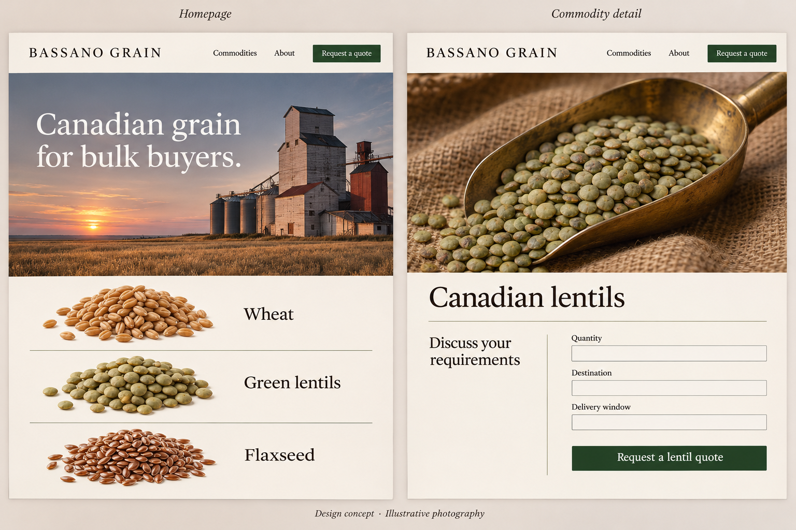

Bassano Grain preview
Buyer website design specification
Concept for review. Help a bulk buyer identify a commodity, assess whether it meets their needs and request a quote that sales can act on.

Illustrative photography and sample layout. View the concept at full size.
Homepage and catalogue
Lead with “Canadian grain for bulk buyers.” Use warm paper tones, dark green controls, serif headings and clearly labelled photographs. Each commodity row opens its product page. Show a compact list on phones with the commodity name beside its image.
Commodity detail
Use green lentils for the first prototype. Show a labelled sample image and owner-confirmed variety, specifications, pack formats and delivery information. Place the details buyers ask about most directly above the quote form. Replace illustrative images with approved photographs before commercial launch.
Quote request
Carry the selected commodity into the form. Ask for quantity with units, destination, delivery window and a reply email. Support additional commodity lines through the existing worksheet. Preserve entered values after validation errors. The target experience records the request and gives the buyer a reference once receipt is confirmed. The current worksheet opens an email draft.
Acceptance checks
- A buyer can open green lentils from the catalogue and start a quote without entering the commodity again.
- On a phone and by keyboard, the buyer can read product details, complete each labelled field and correct missing information.
- A test request reaches the agreed sales destination with the same product and quantities the buyer entered. A delivery failure offers a retry and preserves the enquiry.
- Track product views, quote starts and confirmed receipts. Sales can link qualified enquiries to quotes issued and orders won.
Decisions for the owner meeting
Which commodity should lead? What do buyers ask before requesting a price? Which specifications, photographs and shipment examples can be published? Who receives the enquiry and follows up?